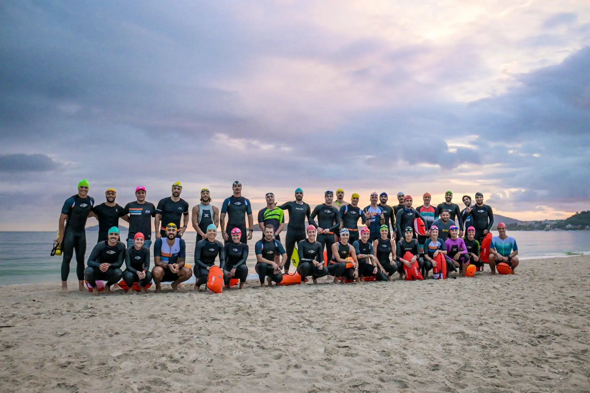

Começando no triathlon
Conte sua experiência em cada modalidade e os horários disponíveis. Essa conversa ajuda a organizar o começo da jornada e as dúvidas sobre a rotina de treinos.
Três modalidades dentro da mesma rotina. O acompanhamento da Endurance On considera sua experiência, suas provas e sua disponibilidade para organizar o treinamento de triathlon com um treinador por perto.

O calendário de natação, ciclismo e corrida precisa conversar com o restante da sua vida. É esse contexto que orienta o trabalho com o treinador.
Conte sua experiência em cada modalidade e os horários disponíveis. Essa conversa ajuda a organizar o começo da jornada e as dúvidas sobre a rotina de treinos.
Compartilhe a distância que pretende disputar e o calendário de provas. O planejamento considera seu ponto de partida e o tempo para se preparar, com acompanhamento ao longo do ciclo.
Receba as sessões no aplicativo e mantenha o treinador informado sobre sua semana. Mudanças na rotina e feedbacks fazem parte da conversa sobre ajustes.
A programação dos treinos coletivos inclui ciclismo, corrida, natação no verão e multisport. Há encontros na Beira Mar Norte, Parque Coqueiros, Praia da Daniela e treinos itinerantes, conforme a programação.
Os locais e horários podem mudar. Consulte a agenda atual e confirme as condições do seu plano com a equipe. Quem treina em outra cidade pode optar pela assessoria online.
Converse com a equipe sobre seu histórico na natação, no ciclismo e na corrida. A escolha do acompanhamento considera seu momento, sua disponibilidade e seu objetivo.
Sim. Você pode receber o planejamento no TrainingPeaks e manter o contato com o treinador no formato online, sem depender dos encontros presenciais.
Na seção de planos, selecione triathlon, preferência de atendimento, treinador e período. O formulário de pré-matrícula permite conferir as condições e a disponibilidade atuais antes do envio.
Se você pretende combinar apenas duas modalidades, a EON tem essa opção no catálogo. Converse com a equipe para escolher o acompanhamento adequado ao seu objetivo.
Consulte os planos, conheça os treinadores e escolha o acompanhamento para o seu momento.